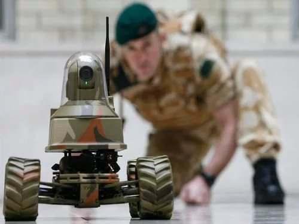

Такое явление, как роботы, в наше время уже никого не удивляет. Если раньше, лет 50 назад, роботы были чем то сверхъестественным, и заметки о них можно было прочитать только на страницах фантастических книг и журналов, то теперь роботы встречаются повсеместно. К примеру, стиральная машинка-автомат – тот же робот, запрограммированный на стирку наших вещей, или плеер – тоже работ, компьютер – робот! Действительно, всё больше и больше новых технологий придумывают люди, чтобы облегчить себе жизнь, и называют их роботами. Но что это такое роботы и как они влияют на нашу жизнь?
По сути, робот – это автоматическое устройство, созданное по принципу живого организма, запрограммированное на то или иное действие. Трудно представить нашу сегодняшнюю жизнь без них. Они часто совершают тяжёлые или вовсе невыполнимые для человека задачи. Простой пример, роботы – сапёры. Эти маленькие чудеса техники, не раз спасали жизнь людей, выполняя нелёгкую задачу: найти и обезвредить взрывное устройство. Если человек может лишиться жизни, совершив маленькую ошибку, то робота можно потом пересобрать. Поэтому очень часто роботы используются в опасной для человека профессии. Так же надо учесть, что роботы гораздо выносливее и сильнее человека, поэтому часто, там, где человек не может справиться, справляются роботы.
Роботехника развивается все стремительнее. С каждым годом появляются сотни новых видов роботов. Поэтому важно знать, что из себя представляют роботы, где их используют, и как ими пользоваться.
Промышленные роботы предназначены для автоматизации всевозможных технологических операций (например сварка, штамповка, металлообработка, сборка готовых изделий и т.д.) на производстве какой либо продукции. Применяются практически во всех отраслях промышленности (машиностроение, приборостроение, нефтехимическая, металлургическая, атомная, автомобильная, авиационная и др.).
Строительные роботы позволяют аналогичным образом автоматизировать огромное количество различных операций, выполняемых в процессе ремонта помещений или строительства новых объектов. Учитывая мировые объемы строительства и неуклонный рост населения планеты Роботизация строительства сейчас весьма актуальна.
Сельскохозяйственные роботы предназначены для выполнения трудоемких и монотонных процессов в сельском хозяйстве. В настоящее время ведется интенсивная разработка таких роботов, и даже есть примеры их использования, например, в Японии.
Транспортные роботы используются, как следует из наименования для автоматического перемещения грузов, либо автономного управления различными транспортными средствами. Транспортными роботами являются самоходные тележки, автопилоты и т.д.
Бытовые роботы. Данный тип роботов применяется в быту и офисах. Ярким примером бытовой автоматизированной машины является набравший приличную популярность робот-пылесос. К бытовым роботам также можно отнести коммуникативных роботов, обеспечивающих эффект присутствия удаленных друг от друга людей, либо способных самостоятельно вести диалог с человеком, и, конечно, многочисленные робоигрушки, предназначенные для развлечений и образовательных в области робототехники целей. В перспективе ожидается появление и более функциональных систем, умеющих выполнять более сложные домашние обязанности такие как: мытье посуды, стирка грязного белья, приготовление пищи и т. п.
Боевые (военные) роботы призваны вывести вооруженные конфликты на качественно иной уровень и предназначены для минимизации непосредственного участия человека в боевых действиях с целью сокращения или исключения вовсе людских потерь, а также для работы в условиях, несовместимых с возможностями человека в военных целях. Разновидностей боевых роботов столько же, сколько и боевых задач для войсковых подразделений: беспилотные с дистанционным управлением самолеты (вертолеты) — разведчики, подводные аппараты и надводные корабли, роботы-минеры, роботы-саперы, роботы-патрульные, роботы для переноски военной амуниции. В силу сложности поставленных перед ними задач современные боевые роботы управляются оператором, но ведутся разработки полностью автономных боевых роботов с искусственным интеллектом, способным принимать решать, однако что не может не вызывать, многочисленные споры сторонников и противников данных машин на правовом поле в части определения ответственности за действия боевых роботов и их последствия.
Перед охранными роботами ставятся задачи по защите вверенных территорий или помещений. В простейшем случае указанные роботы выполняют патрулирование охраняемых периметров и в случае фиксации проникновения злоумышленников сигнализируют об этом дежурным операторам. В последнее время появляется тенденция к оснащению робо-охранников нелетальными видами оружия.
Исследовательские роботы используются для сбора всевозможных видов информации об исследуемых объектах, ее переработки и передаче оператору. Объекты могут быть самыми разнообразными: поверхности планет, подводное пространство, подземные шахты, пещеры, полости эксплуатируемых трубопроводов, зараженная местность и другие труднодоступные для человека области.
У подавляющего большинства роботов действительно есть общие черты. Прежде всего, почти у всех роботов есть подвижное тело. Некоторые обладают только моторизованными колесами, у других есть десятки подвижных сегментов, как правило, из металла или пластика. Как кости в вашем теле, отдельные сегменты соединяются вместе с помощью суставов.
Колеса робота и поворотные суставные сегменты активизируются при помощи приводов разного рода. Некоторые роботы используют электродвигатели и соленоиды в качестве актуаторов (приводов); некоторые используют гидравлическую систему; некоторые — пневматическую систему (на основе сжатых газов). Роботы могут использовать все эти типы приводов.
Робот нуждается в источнике питания, чтобы управлять этими приводами. Большинство роботов либо оснащены батареей, либо работают от розетки. Гидравлическим роботам нужен насос для создания давления в гидравлической системе, а пневматическим роботам нужен воздушный компрессор или баллоны со сжатым воздухом.
Все приводы подключаются к электрической цепи. Цепь напрямую питает электродвигатели и соленоиды, что активизирует гидравлическую систему при помощи электрических клапанов. Клапаны направляют сжатую жидкость через машину. Для перемещения гидравлической ноги, например, оператор робота должен открыть клапан, ведущий от жидкостного насоса к поршневому цилиндру, закрепленному на ноге. Жидкость под давлением будет двигать поршень, толкая ногу вперед. Чтобы двигать конечностями в обоих направлениях, роботы используют поршни, которые могут толкаться в обе стороны.
Компьютер робота управляет всем, что подключено к цепи. Чтобы передвигать робота, компьютер активирует все необходимые двигатели и клапаны. Большинство роботов можно перепрограммировать, чтобы изменить поведение — достаточно просто ввести новую программу в компьютер.
Не у всех роботов есть система сенсоров, и лишь некоторые обладают способностью видеть, слышать, чувствовать запах или вкус. Самая распространенная способность робота — способность ходить и наблюдать за своим перемещением. Стандартная конструкция использует колеса с щелью в суставах робота. Светодиод на одной стороне колеса пускает луч света через щель, чтобы подсветить датчик света на другой стороне колеса. Когда робот движет определенным суставом, колесо с щелью крутится. Щель разбивает луч света по мере вращения колеса. Световой датчик считывает поведение светового луча и передает данные на компьютер. Компьютер точно может сказать, как вращается сустав в определенной модели. По тому же принципу работает компьютерная мышь.
Наиболее распространенный вид робота — это роботизированный манипулятор. Типичный манипулятор состоит из семи металлических сегментов, соединенных шестью суставами. Компьютер управляет роботом, вращая отдельные шаговые двигатели, подключенные к каждому суставу (некоторые крупные манипуляторы используют гидравлику или пневматику). В отличие от обычных двигателей, шаговые двигатели двигаются точными шажками. Это позволяет роботу перемещать руку очень точно, в точности повторяя одно и то же движение снова и снова. Робот использует датчики движения, чтобы убедиться, что совершает движения правильно.
Промышленный робот с шестью суставами напоминает человеческую руку — у него есть подобия плечу, локтю и запястью. Как правило, плечо установлено на неподвижной базовой структуре, а не на подвижном теле. У такого типа робота есть шесть степеней свободы, то есть он может поворачиваться в шести разных направлениях. Для сравнения, человеческая рука имеет семь степеней свободы.
Задача вашей руки — перемещаться с места на место. Аналогичным образом, задача манипулятора — перемещать концевой эффектор с места на место. Вы можете оснастить манипулятор разными концевыми эффекторами, предназначенными для конкретных задач. Один из распространенных эффекторов — упрощенная версия руки, которая может хватать и переносить разные объекты. Манипуляторы часто обладают встроенными датчиками давления, которые предписывают компьютеру, с какой силой захватывать конкретный объект. Это позволяет роботу не ломать все, что он хватает. Другие конечные эффекторы включают паяльные лампы, дрели и распылители порошка или краски.
Промышленные роботы предназначены для того, чтобы делать одни и те же вещи, в контролируемой среде, снова и снова. Например, робот может закручивать колпачки на тюбиках с зубной пастой. Чтобы научить робота делать это, программист описывает порядок движения, используя ручной контроллер. Робот записывает последовательность движений в память и делает это снова и снова, когда новый продукт поступает на конвейер.
Большинство промышленных роботов работает на конвейерах, собирая автомобили. Роботы делают это более эффективно, чем люди, поскольку более точны. Они всегда сверлят в одном и том же месте, затягивают болты с одной и той же силой, независимо от того, сколько часов проработали. Сборочные роботы также важны для компьютерной отрасли. Весьма сложно точно собрать крошечный микрочип силами человека.
Манипуляторы весьма просто собрать и написать для них программу, поскольку они работают в ограниченном пространстве. Но все становится немного сложнее, если вы отправляете робота в мир.
Первое препятствие заключается в том, чтобы дать роботу рабочую систему передвижения. Если робот будет двигаться только по гладкой земле, колеса или гусеницы будут лучшим вариантом. Колеса или гусеницы также могут работать на грубой земле, если будут достаточно большими. Но чаще всего робототехники задумываются о ногах, поскольку их легче адаптировать. Строительство роботов с ногами также помогает ученым понимать естественное движение — полезное упражнение для биологов.
Как правило, гидравлические или пневматические поршни перемещают ноги робота вперед и назад. Поршни крепятся к разным сегментам ног так же, как мышцы крепятся к разным костям. Но заставить все эти поршни работать должным образом — сложная задача. Когда вы были ребенком, ваш мозг пытался выяснить, как нужно точно двигать мышцами, чтобы стоять на двух ногах и не падать. Аналогичным образом, конструктор робота должен определить правильную комбинацию поршневых движений, участвующих в ходьбе и запрограммировать эту информацию в компьютер робота. Многие мобильные роботы оснащены встроенной системой баланса (набором гироскопов, например), которая подсказывает компьютеру, когда нужно исправить движение.
Прямохождение (ходьба на двух ногах) — довольно нестабильно, поэтому ему сложно научить роботов. Чтобы создать стабильного робота-ходока, конструкторы часто наблюдают за миром животных, особенно насекомых. Шестиногие насекомые обладают невероятно хорошим балансом и адаптируются к широкому набору местностей.
Некоторые мобильные роботы управляются дистанционно — человек говорит им, что делать и когда. Дистанционное управление может осуществляться с помощью провода, радио или инфракрасных сигналов. Роботы с удаленным управлением часто называются кукольными роботами, и они полезны для работы в опасных или труднодоступных условиях — например, в глубокой воде или в жерле вулкана. Некоторые роботы управляются дистанционно лишь отчасти. Например, оператор может отправить робота в определенное место, а обратно робот уже сам найдет дорогу.